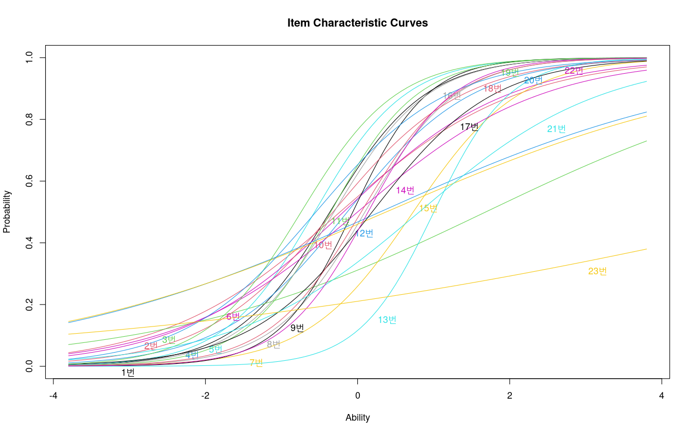

우리 학교 시험문제는 좋은 시험문제일까? 2026학년도 1학기 중간고사 확률과 통계 선택형 21문항의 정오표를 R로 분석해 문항별 난이도와 변별도를 확인하고, 문항반응이론으로 문항특성곡선을 그려 봅니다.
내신 5등급제 전환과 ‘내신 킬러 문항’ 논란이 이어지면서, 시험이 학생들의 실력을 제대로 구분하고 있는지에 대한 관심이 커졌습니다. 지나치게 어렵거나 쉬운 문항, 상위권과 하위권을 가르지 못하는 문항은 성적의 신뢰도를 떨어뜨립니다.
시험이 끝나면 “핵심 성취기준에 맞게 출제하였음”, “반별 평균 편차는 ○점”처럼 평균과 편차 중심으로 결과를 기록합니다. 하지만 어떤 문항이 제 역할을 했는지는 문항 단위로 따져 봐야 알 수 있습니다. 나이스 정오표와 R만 있으면 바로 확인할 수 있어요.
| 고전검사이론 (CTT) · 같은 집단 안에서 | 문항반응이론 (IRT) · 다른 집단끼리도 | |
|---|---|---|
| 핵심 | 정답률(난이도)과 상·하위 집단의 정답률 차이(변별도) | 능력 θ에 따른 정답 확률을 S자 곡선(문항특성곡선)으로 모형화 |
| 장점 | 계산이 간단하고 이해하기 쉬움 | 문항 모수가 응시 집단에 따라 크게 변하지 않아 문항 자체를 평가 가능 (TOEFL, 수능, 모의고사) |
| 단점 | 응시 집단에 따라 값이 달라져 다른 집단 간 비교가 어려움 (같은 학교 안에서만) | 수학적 원리가 어렵고 표본이 어느 정도 커야 함 |
이름은 ‘난이도’지만 실제로는 정답률이라 값이 클수록 쉬운 문항입니다.
Ebel의 문항변별도 평가 기준
학생의 능력을 θ(평균 0, 표준편차 1)로 두고, 능력이 높아질수록 정답 확률이 S자로 올라가는 곡선을 문항마다 추정합니다. 곡선의 가로 위치가 난이도 b, 기울기가 변별도 a, 바닥 높이가 추측도 c입니다.
교재에 따라 지수에 1.7을 곱해(1.7a) 정규오자이브 모형에 맞추기도 합니다. 이 자료의 계산과 R의 ltm 패키지는 1.7 없이 쓰는 방식입니다.
| IRT 변별도 a | 해석 (Baker) |
|---|---|
| 0 | 없다 |
| 0.01 ~ 0.34 | 거의 없다 |
| 0.35 ~ 0.64 | 낮다 |
| 0.65 ~ 1.34 | 적절하다 |
| 1.35 ~ 1.69 | 높다 |
| 1.70 이상 | 매우 높다 |
슬라이더로 a, b, c를 바꾸며 곡선이 어떻게 변하는지 확인하세요. 점선은 같은 a, b에서 추측도가 0일 때의 곡선입니다.
교과담임 → 지필평가조회/통계 → 교과목별 학생답 정오표 → 조회 후 엑셀로 내려받기
선택형은 맞은 문항 = 1, 틀린 문항 = 0. 문항이 열(1번~21번), 학생이 행이 되도록 정리하고 이름·학번은 지웁니다.
posit.cloud에 접속해 프로젝트를 만들고 엑셀(또는 CSV)을 올린 뒤 아래 코드를 실행합니다. 설치 없이 브라우저에서 됩니다.
난이도·변별도 그래프와 문항특성곡선을 보며 실제 시험지 문항과 비교합니다.
서·논술형은 점수가 0점~만점으로 다양해 변별력이 좋을 가능성이 높습니다. 이 자료는 선택형 21문항만 분석했습니다.
# 0. 패키지 설치 (처음 한 번만) install.packages(c("readxl", "ShinyItemAnalysis", "ltm")) # 1. 데이터 불러오기 (정답 1, 오답 0) library(readxl) data1 <- read_excel("data1.xlsx", sheet = "DATA") # 또는 이 페이지의 CSV 사용 # data1 <- read.csv("responses.csv", check.names = FALSE, # fileEncoding = "UTF-8-BOM") # 2. 고전검사이론: 난이도 · 변별도 library(ShinyItemAnalysis) DDplot(data1) # 상위 1/3 vs 하위 1/3 DDplot(data1, k = 5, l = 4, u = 5) # 상위권 vs 최상위권 ItemAnalysis(data1) # 문항별 지표 표 # 3. 문항반응이론: 2모수 모형 library(ltm) fit <- ltm(data1 ~ z1) coef(fit) # Dffclt = 난이도 b, Dscrmn = 변별도 a plot(fit, type = "ICC") # 문항특성곡선 # 3모수 모형 (추측도 c 포함) fit3 <- tpm(data1) coef(fit3)
R의 DDplot()은 기본값으로 총점 상위 1/3과 하위 1/3을 비교합니다. 이 페이지의 변별도는 교과서식 상·하위 27%가 기본이고, 아래 그래프에서 R 기본값(1/3)으로도 바꿔 볼 수 있습니다.
학생을 총점 순으로 5개 성적대(각 약 50명)로 나눈 실제 정답률(점)과, 2모수 모형으로 추정한 문항특성곡선(선)을 겹쳐 그렸습니다. 점이 곡선을 잘 따라가고 오른쪽으로 갈수록 가파르게 오르면 변별력이 좋은 문항입니다. 1번·4번·9번·16번처럼 최하위 성적대의 점이 곡선보다 훨씬 위에 있다면, 한 번호로 찍은 학생들이 맞힌 경우입니다(추측도 c가 없는 2모수 모형의 한계).
2모수 모형으로 추정한 21개 곡선입니다. 위의 문항 선택과 연동되어 선택한 문항이 진하게 표시되고, 마우스를 올리면 문항 번호가 보입니다. 완만하게 누운 곡선들이 변별력이 낮은 문항입니다.

ltm)로 직접 그린 문항특성곡선 출력 화면. 위의 인터랙티브 그래프와 같은 2모수 모형입니다.| 문항 | 난이도 P | 수준 | 변별도 (27%) | 수준 (Ebel) | 상위권 변별 | 문항-총점 상관 | IRT a | IRT b | a 해석 |
|---|
상위권 변별: 5개 성적대 중 4(상위권)와 5(최상위권) 집단의 정답률 차이 · 문항-총점 상관: 그 문항을 뺀 총점과의 상관(교정된 문항-총점 상관) · IRT a, b: 2모수 로지스틱 모형(주변최대우도 추정, R ltm과 같은 모형). R에서 직접 계산하면 소수점 둘째 자리에서 조금 다를 수 있습니다.